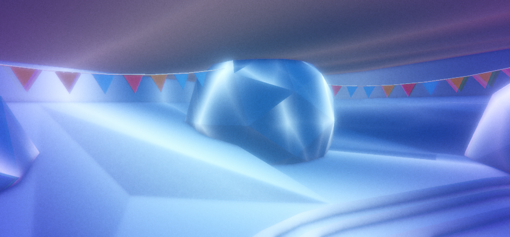
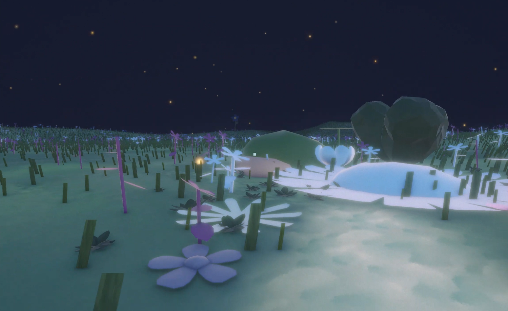
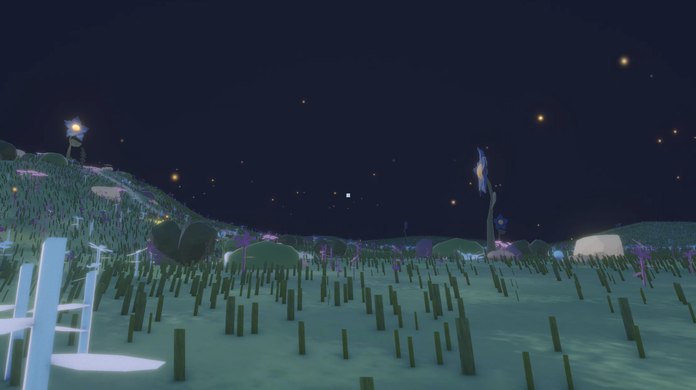
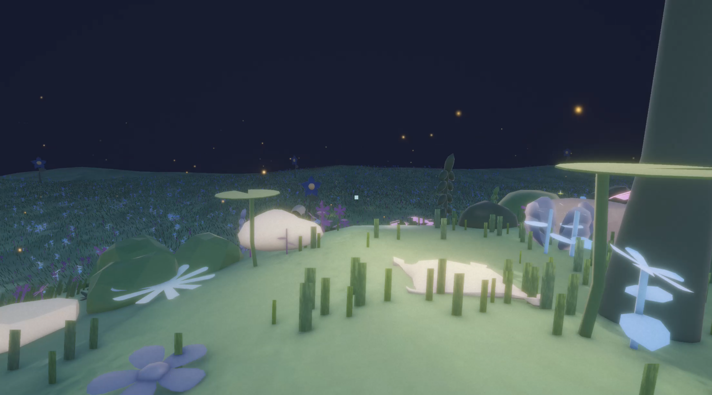

ELSEWHERE
Made with: Unity • Blender • BandLab • C#
Elsewhere is an interactive 3D experience that translates the feeling of being out of place in a social setting into a journey towards solitude and self understanding. The story starts in a surreal and messy party environment in which players navigate by searching for hidden balloons, which gradually points them towards an unexpected environmental transformation. Once the party collapses, the journey moves from confined hallways into a peaceful, flowery landscape, where it becomes open with soft feelings. Through environmental storytelling, sound design, visual effects, and user interaction, Elsewhere explores the discomfort of feeling withdrawn from social life to then frame solitude as reflection and acceptance.





